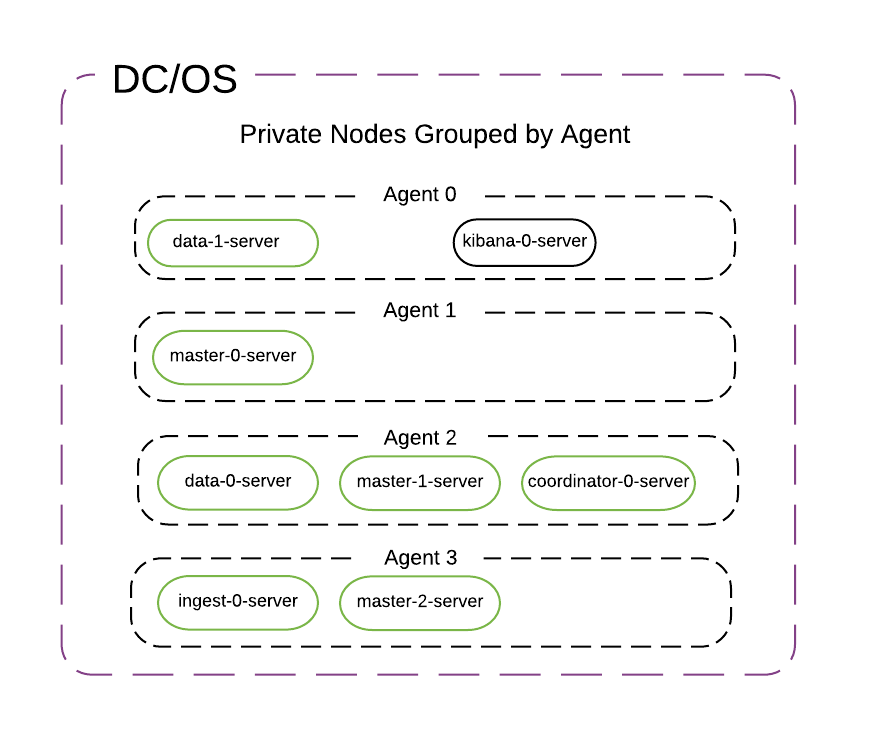

The default DC/OS Elastic installation provides reasonable defaults for trying out the service, but may not be sufficient for production use. You may require a different configuration depending on the context of the deployment.
Prerequisites
- Depending on your security mode in Enterprise DC/OS, you may need to provision a service account before installing. Only someone with
superuserpermission can create the service account.strictsecurity mode requires a service account.permissivesecurity mode a service account is optional.disabledsecurity mode does not require a service account.
-
Your cluster must have at least three private nodes.
Default Installation
To start a basic test cluster with three master nodes, two data nodes, and one coordinator node, run the following command on the DC/OS CLI. Enterprise DC/OS users must follow additional instructions. More information about installing Elastic on Enterprise DC/OS.
$ dcos package install beta-elastic
This command creates a new instance with the default name elastic. Two instances cannot share the same name, so installing additional instances beyond the default instance requires customizing the name at install time for each additional instance.
All dcos beta-elastic CLI commands have a --name argument allowing the user to specify which instance to query. If you do not specify a service name, the CLI assumes a default value matching the package name, i.e. beta-elastic. The default value for --name can be customized via the DC/OS CLI configuration:
$ dcos beta-elastic --name=elastic <cmd>
Note: Alternatively, you can install from the DC/OS web interface. If you install from the web interface, you must install the DC/OS CLI subcommands separately. From the DC/OS CLI, enter:
dcos package install beta-elastic --cli
Integration with DC/OS access controls
In Enterprise DC/OS 1.10 and above, you can integrate your SDK-based service with DC/OS ACLs to grant users and groups access to only certain services. You do this by installing your service into a folder, and then restricting access to some number of folders. Folders also allow you to namespace services. For instance, staging/elastic and production/elastic.
Steps:
- In the DC/OS GUI, create a group, then add a user to the group. Or, just create a user. Click Organization > Groups > + or Organization > Users > +. If you create a group, you must also create a user and add them to the group.
-
Give the user permissions for the folder where you will install your service. In this example, we are creating a user called
developer, who will have access to the/testingfolder.Select the group or user you created. Select ADD PERMISSION and then toggle to INSERT PERMISSION STRING. Add each of the following permissions to your user or group, and then click ADD PERMISSIONS.
dcos:adminrouter:service:marathon full dcos:service:marathon:marathon:services:/testing full dcos:adminrouter:ops:mesos full dcos:adminrouter:ops:slave full - Install your service into a folder called
test. Go to Catalog, then search for beta-elastic. -
Click CONFIGURE and change the service name to
/testing/elastic, then deploy.The slashes in your service name are interpreted as folders. You are deploying
elasticin the/testingfolder. Any user with access to the/testingfolder will have access to the service.
Important:
- Services cannot be renamed. Because the location of the service is specified in the name, you cannot move services between folders.
- DC/OS 1.9 and earlier does not accept slashes in service names. You may be able to create the service, but you will encounter unexpected problems.
Interacting with your foldered service
- Interact with your foldered service via the DC/OS CLI with this flag:
--name=/path/to/myservice. - To interact with your foldered service over the web directly, use
http://<dcos-url>/service/path/to/myservice. E.g.,http://<dcos-url>/service/testing/elastic/v1/endpoints.
Placement Constraints
Placement constraints allow you to customize where a service is deployed in the DC/OS cluster. Depending on the service, some or all components may be configurable using Marathon operators (reference). For example, [["hostname", "UNIQUE"]] ensures that at most one pod instance is deployed per agent.
A common task is to specify a list of whitelisted systems to deploy to. To achieve this, use the following syntax for the placement constraint:
[["hostname", "LIKE", "10.0.0.159|10.0.1.202|10.0.3.3"]]
You must include spare capacity in this list, so that if one of the whitelisted systems goes down, there is still enough room to repair your service (via pod replace) without requiring that system.
Regions and Zones
Placement constraints can be applied to zones by referring to the @zone key. For example, one could spread pods across a minimum of 3 different zones by specifying the constraint:
[["@zone", "GROUP_BY", "3"]]
When the region awareness feature is enabled (currently in beta), the @region key can also be referenced for defining placement constraints. Any placement constraints that do not reference the @region key are constrained to the local region.
Example
Suppose we have a Mesos cluster with zones a,b,c. For balanced Placement for a Single Region:
{
...
"count": 6,
"placement": "[[\"@zone\", \"GROUP_BY\", \"3\"]]"
}
Instances will all be evenly divided between zones a,b,c.
Custom Installation
You can customize the Elastic cluster in a variety of ways by specifying a JSON options file. For example, here is a sample JSON options file that customizes the service name, master transport port, and plugins:
{
"service": {
"name": "another-cluster"
},
"master_nodes": {
"transport_port": 19300
},
"elasticsearch": {
"plugins": "analysis-icu,analysis-kuromoji"
}
}
The command below creates a cluster using a options.json file:
$ dcos package install beta-elastic --options=options.json
Recommendation: Store your custom configuration in source control.
Multiple Elastic Cluster Installation
Installing multiple Elastic clusters is identical to installing Elastic clusters with custom configurations as described above. The only requirement on the operator is that a unique name is specified for each installation.
Sample JSON options file named another-cluster.json:
{
"service": {
"name": "another-cluster"
}
}
The command below creates a cluster using another-cluster.json:
$ dcos package install beta-elastic --options=another-cluster.json
See the Configuring section for a list of fields that can be customized via an options JSON file when the Elastic cluster is created.
Virtual networks
Elastic supports deployment on virtual networks on DC/OS (including the dcos overlay network), allowing each container (task) to have its own IP address and not use the ports resources on the agent. This can be specified by passing the following configuration during installation:
{
"service": {
"virtual_network_enabled": true
}
}
As mentioned in the developer guide once the service is deployed on a virtual network, it cannot be updated to use the host network.
TLS
The Elastic service can be launched with TLS encryption. Enabling TLS will switch all internal communication between Elastic nodes to encrypted connections.
Enabling TLS is only possible in permissive and strict cluster security modes on Enterprise DC/OS. Both modes require a service account. Additionally, a service account must have the dcos:superuser permission. If the permission is missing the Elastic scheduler will not abe able to provision TLS artifacts.
Installing Elastic with TLS support requires enabling X-Pack functionality.
Sample JSON options file named elastic-tls.json:
{
"service": {
"service_account_secret": "elastic",
"service_account": "elastic",
"security": {
"transport_encryption": {
"enabled": true
}
}
},
"elasticsearch": {
"xpack_enabled": true
}
}
For more information about TLS in the SDK see the TLS documentation.
Clients
Clients connecting to the Elastic service are required to use the DC/OS CA bundle to verify the TLS connections.
Kibana
When the Elastic service is deployed on DC/OS with TLS support Kibana, acting as an Elastic client, must be configured to verify TLS with the DC/OS CA bundle. To install the DC/OS CA bundle launch Kibana with the following configuration.
Sample JSON options file named kibana-tls.json:
{
"kibana": {
"xpack_enabled": true,
"elasticsearch_url": "https://coordinator.elastic.l4lb.thisdcos.directory:9200",
"elasticsearch_tls": true,
"...": "..."
}
}
Similarly to Elastic, Kibana requires X-Pack to be installed. The Kibana package itself doesn’t support exposing itself over a TLS connection.
Changing Configuration at Runtime
The instructions below describe how to update the configuration for a running DC/OS service.
Enterprise DC/OS 1.10
Enterprise DC/OS 1.10 introduces a convenient command line option that allows for easier updates to a service’s configuration, as well as allowing users to inspect the status of an update, to pause and resume updates, and to restart or complete steps if necessary.
Prerequisites
- Enterprise DC/OS 1.10 or newer.
- Service with a version greater than 2.0.0-x.
- The DC/OS CLI installed and available.
- The service’s subcommand available and installed on your local machine.
- You can install just the subcommand CLI by running
dcos package install --cli beta-elastic. - If you are running an older version of the subcommand CLI that doesn’t have the
updatecommand, uninstall and reinstall your CLI.dcos package uninstall --cli beta-elastic dcos package install --cli beta-elastic
- You can install just the subcommand CLI by running
Preparing configuration
If you installed this service with Enterprise DC/OS 1.10, you can fetch the full configuration of a service (including any default values that were applied during installation). For example:
$ dcos beta-elastic --name=elastic describe > options.json
Make any configuration changes to this options.json file.
If you installed this service with a prior version of DC/OS, this configuration will not have been persisted by the the DC/OS package manager. You can instead use the options.json file that was used when installing the service.
Note: You must specify all configuration values in the options.json file when performing a configuration update. Any unspecified values will be reverted to the default values specified by the DC/OS service. See the “Recreating options.json” section below for information on recovering these values.
Recreating options.json (optional)
If the options.json from when the service was last installed or updated is not available, you will need to manually recreate it using the following steps.
First, we’ll fetch the default application’s environment, current application’s environment, and the actual template that maps config values to the environment:
- Ensure you have jq installed.
- Set the service name that you’re using, for example:
$ SERVICE_NAME=elastic - Get the version of the package that is currently installed:
$ PACKAGE_VERSION=$(dcos package list | grep $SERVICE_NAME | awk '{print $2}') - Then fetch and save the environment variables that have been set for the service:
$ dcos marathon app show $SERVICE_NAME | jq .env > current_env.json - To identify those values that are custom, we’ll get the default environment variables for this version of the service:
$ dcos package describe --package-version=$PACKAGE_VERSION --render --app $SERVICE_NAME | jq .env > default_env.json - We’ll also get the entire application template:
$ dcos package describe $SERVICE_NAME --app > marathon.json.mustache
Now that you have these files, we’ll attempt to recreate the options.json.
- Use JQ and
diffto compare the two:$ diff <(jq -S . default_env.json) <(jq -S . current_env.json) - Now compare these values to the values contained in the
envsection in application template:$ less marathon.json.mustache - Use the variable names (e.g.
service.name) to create a newoptions.jsonfile as described in Initial service configuration.
Starting the update
Once you are ready to begin, initiate an update using the DC/OS CLI, passing in the updated options.json file:
$ dcos beta-elastic --name=elastic update start --options=options.json
You will receive an acknowledgement message and the DC/OS package manager will restart the Scheduler in Marathon.
See Advanced update actions for commands you can use to inspect and manipulate an update after it has started.
Open Source DC/OS, Enterprise DC/OS 1.9 and earlier
If you do not have Enterprise DC/OS 1.10 or later, the CLI commands above are not available. For Open Source DC/OS of any version, or Enterprise DC/OS 1.9 and earlier, you can perform changes from the DC/OS GUI.
These are the general steps to follow:
- View your DC/OS dashboard at
http://$DCOS_URI/#/services/overview - In the list of
Applications, click the name of the Elastic service to be updated. - Within the Elastic instance details view, click the
Configurationtab, then clickEdit. - In the dialog that appears, expand the
Environment Variablessection and update any field(s) to their desired value(s). For example, to increase the number of data nodes, edit the value forDATA_NODE_COUNT. Do not edit the value forFRAMEWORK_NAME,MASTER_NODE_TRANSPORT_PORT, or any of the disk type/size fields. - Click
Change and deploy configurationto apply any changes and cleanly reload the Elastic service scheduler. The Elastic cluster itself will persist across the change.
Configuration Guidelines
- Service name: This needs to be unique for each instance of the service that is running. It is also used as your cluster name.
- Service user: This must be a non-root user that already exists on each agent. The default user is
nobody. - X-Pack is not installed by default, but you can enable it. X-Pack comes with a 30-day trial license.
- Health check credentials: If you have X-Pack enabled, the health check will use these credentials for authorization. We recommend you create a specific Elastic user/password for this with minimal capabilities rather than using the default superuser
elastic. - Plugins: You can specify other plugins via a comma-separated list of plugin names (e.g., “analysis-icu”) or plugin URIs.
- CPU/RAM/Disk/Heap: These will be specific to your DC/OS cluster and your Elasticsearch use cases. Please refer to Elastic’s guidelines for configuration.
- Node counts: At least 1 data node is required for the cluster to operate at all. You do not need to use a coordinator node. Learn about Elasticsearch node types here. There is no maximum for node counts.
- Master transport port: You can pick whichever port works for your DC/OS cluster. The default is 9300. If you want multiple master nodes from different clusters on the same host, specify different master HTTP and transport ports for each cluster. If you want to ensure a particular distribution of nodes of one task type (e.g., master nodes spread across 3 racks, data nodes on one class of machines), specify this via the Marathon placement constraint.
- Serial vs Parallel deployment. By default, the DC/OS Elastic Service tells DC/OS to install everything in parallel. You can change this to serial in order to have each node installed one at a time.
- Serial vs Parallel update. By default, the DC/OS Elastic Service tells DC/OS to update everything serially. You can change this to parallel in order to have each node updated at the same time. This is required, for instance, when you turn X-Pack on or off.
- Custom YAML can be appended to
elasticsearch.ymlon each node
Immutable settings (at cluster creation time via Elastic package UI or JSON options file via CLI)
These setting cannot be changed after installation.
- Service name (aka cluster name). Can be hyphenated, but not underscored.
- Master transport port.
- Disk sizes/types.
Modifiable settings (at runtime via Marathon env vars):
- Plugins
- CPU
- Memory
- JVM Heap (do not exceed ½ available node RAM)
- Node count (up, not down)
- Health check credentials
- X-Pack enabled/disabled
- Deployment/Upgrade strategy (serial/parallel). Note that serial deployment does not yet wait for the cluster to reach green before proceeding to the next node. This is a known limitation.
- Custom
elasticsearch.yml
Any other modifiable settings are covered by the various Elasticsearch APIs (cluster settings, index settings, templates, aliases, scripts). It’s possible that some of the more common cluster settings will get exposed in future versions of the Elastic DC/OS Service.
Viewing Plans via the CLI
You can view the deploy plan for the DC/OS Elastic Service via the service URL: http://$DCOS_URL/service/$SERVICE_NAME/v1/plans
Topology
Each task in the cluster performs one and only one of the following roles: master, data, ingest, coordinator.
The default placement strategy specifies no constraint except that all the master nodes are distributed to different agents. You can specify further Marathon placement constraints for each node type. For example, you can specify that data nodes are never colocated, or that ingest nodes are deployed on a rack with high-CPU servers.


No matter how big or small the cluster is, there will always be exactly 3 master-only nodes with minimum_master_nodes = 2.
Default Topology (with minimum resources to run on 3 agents)
- 3 master-only nodes
- 2 data-only nodes
- 1 coordinator-only node
- 0 ingest-only node
The master/data/ingest/coordinator nodes are set up to only perform their one role. That is, master nodes do not store data, and ingest nodes do not store cluster state.
Minimal Topology
You can set up a minimal development/staging cluster without ingest nodes, or coordinator nodes. You’ll still get 3 master nodes placed on 3 separate hosts. If you don’t care about replication, you can even use just 1 data node. By default, Elasticsearch creates indices with a replication factor of 1 (i.e., 1 primary shard + 1 replica), so with 1 data node, your cluster will be stuck in a ‘yellow’ state unless you change the replication factor.
Note that with X-Pack installed, the default monitoring behavior is to try to write to an ingest node every few seconds. Without an ingest node, you will see frequent warnings in your master node error logs. While they can be ignored, you can turn them off by disabling X-Pack monitoring in your cluster, like this:
$ curl -XPUT -u elastic:changeme master.elastic.l4lb.thisdcos.directory:9200/_cluster/settings -d '{
"persistent" : {
"xpack.monitoring.collection.interval" : -1
}
}'